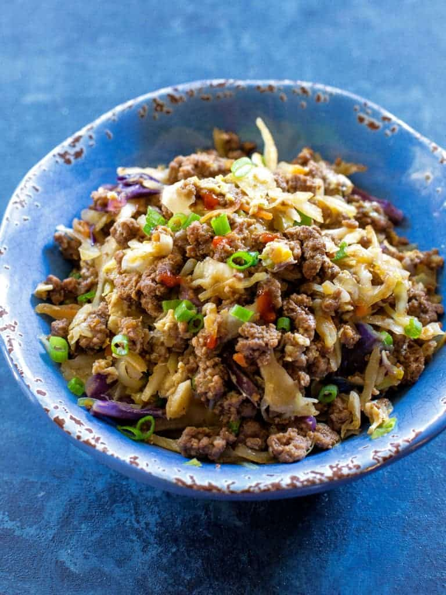

Egg Roll in a Bowl
Looking for a quick and satisfying dinner with all the flavors of an egg roll, but without the hassle of deep frying? This Egg Roll in a Bowl is a super easy, one-pan meal that’s full of tasty ingredients like lean meat, crunchy cabbage, and flavorful seasonings. It comes together in about 20 minutes, making it perfect for those busy weeknights when you want something delicious but don’t have a lot of time to cook.
Packed with protein and vegetables, this dish is a healthy and satisfying option that everyone in the family will love. Plus, it’s low-carb and can be easily made gluten-free if needed. Whether you’re craving a takeout-inspired meal or just looking for something simple and flavorful, this recipe is the perfect choice.
Here's what you'll need:
- 1 lb ground pork (or ground chicken or turkey)
- 1/2 head of cabbage, shredded
- 1 medium onion, finely chopped
- 2 cloves garlic, minced
- 1 tsp fresh ginger, minced (or 1/2 tsp ground ginger)
- 2 tbsp soy sauce (or coconut aminos for gluten-free)
- 1 tbsp rice vinegar
- 1/2 tsp sesame oil (optional)
- 1/4 tsp black pepper
- 2 tbsp green onions, chopped (for garnish)
- 1 tbsp sesame seeds (optional)
Instructions:
- In a large skillet, cook the ground meat over medium heat until browned. Drain any excess fat.
- Add the chopped onion and garlic to the pan and cook until soft, about 3 minutes.
- Stir in the ginger, soy sauce, rice vinegar, and sesame oil (if using).
- Add the shredded cabbage and cook until it wilts and softens, about 5-7 minutes.
- Season with black pepper and stir everything together until well combined.
- Serve the mixture topped with chopped green onions and sesame seeds, if desired.
In under 30 minutes, you’ve got a delicious, low-maintenance dinner that tastes just like an egg roll, but with way less effort! Perfect for when you need something filling but don’t want to spend hours in the kitchen.